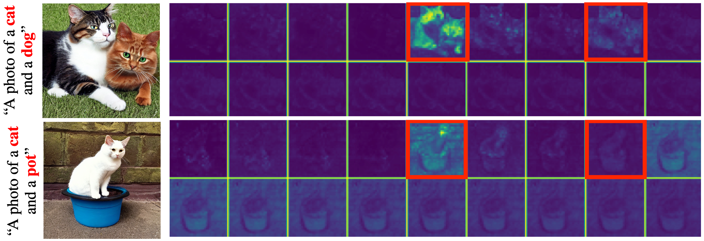
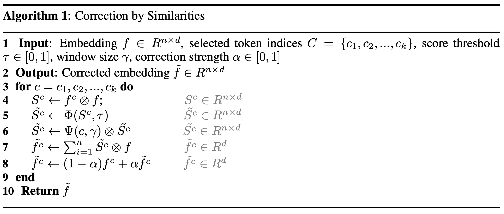
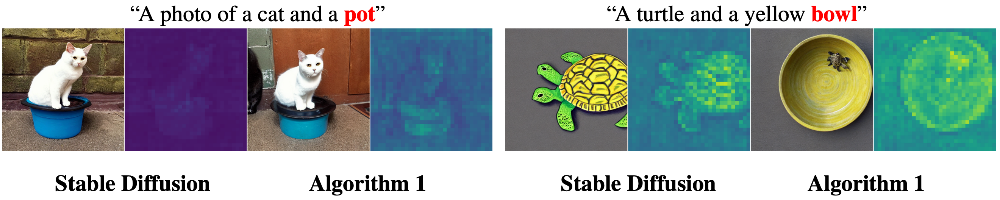
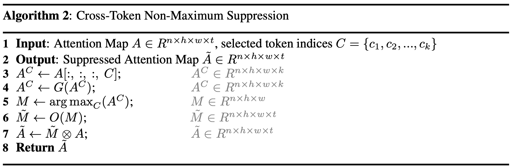
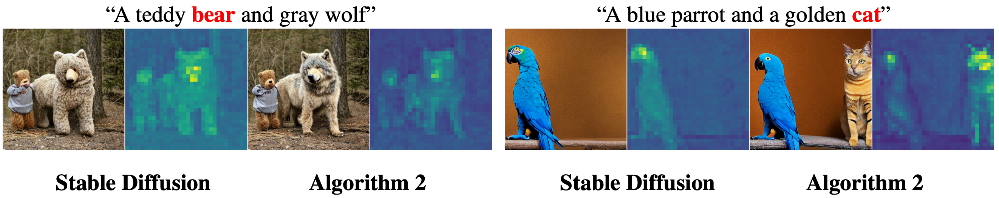
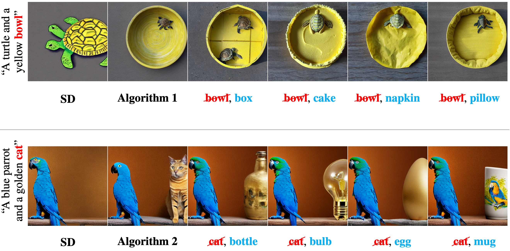

Multi-Concept T2I-Zero: Tweaking Only The Text Embeddings and Nothing Else
We present a novel task of zero-shot multi-concept text-to-image generation and outline an economical solution, bypassing the necessity for training or optimizing at each diffusion step. This involves just tweaking the text embeddings employed in text-to-image diffusion models.

Object Dominance and Non-Localized Contribution make multi-concept image synthesis particularly complex. As a result, existing image manipulation and personalization methods struggle with multiple concepts. Our proposed method addresses these issues and demonstrates its capabilities in text-to-image, image manipulation, and personalization for multiple concepts.
Abstract
Recent advances in text-to-image diffusion models have enabled the photorealistic generation of images from text prompts. Despite the great progress, existing models still struggle to generate compositional multi-concept images naturally, limiting their ability to visualize human imagination. While several recent works have attempted to address this issue, they either introduce additional training or adopt guidance at inference time. In this work, we consider a more ambitious goal: natural multi-concept generation using a pre-trained diffusion model, and with almost no extra cost. To achieve this goal, we identify the limitations in the text embeddings used for the pre-trained text-to-image diffusion models. Specifically, we observe concept dominance and non-localized contribution that severely degrade multi-concept generation performance. We further design a minimal low-cost solution that overcomes the above issues by tweaking (not re-training) the text embeddings for more realistic multi-concept text-to-image generation. Our Correction by Similarities method tweaks the embedding of concepts by collecting semantic features from most similar tokens to localize the contribution. To avoid mixing features of concepts, we also apply Cross-Token Non-Maximum Suppression, which excludes the overlap of contributions from different concepts. Experiments show that our approach outperforms previous methods in text-to-image, image manipulation, and personalization tasks, despite not introducing additional training or inference costs to the diffusion steps.
The challenges of multi-concept image synthesis can be divided into the following parts: Object Dominance - when some concepts dominate the generation process and others get neglected. Non-Localized Contribution - when all concepts are synthesized, but their respective embeddings contribution is not localized.

Cross-Attention visualization. In each group, from left to right, the cross-attention maps correspond to the text tokens inside the prompt, followed by padding null tokens. Red tokens are marked with red rectangles. Top: Concept Dominance, Bottom: Non-Localized Contribution.
Method
Correction By Similarities (Algorithm 1)
We introduce a Corrections-by-Similarities approach to combat the non-localized contribution issue. Specifically, we find similar embeddings and combine them all by their similarity scores to replace the original embedding of a concept.

Where \(\otimes\) is the elementwise multiplication operation, \( \Phi(S, \tau) \) is a function that thresholds \(S\) values with \(\tau\) parameter and normalizes them by \(max(S)\), \(\Psi(c, \gamma) \in [0, 1]^{n}\) is a windowing function with window size \(\gamma\) which excludes the contribution of tokens farther from the selected token \(c\)

A comparison between Stable Diffusion and Algorithm 1. Masks are average crossattention maps of the concept highlighted in red.
Cross-Token Non-Maximum Suppression (Algorithm 2)
Cross-Token Non-Maximum Suppression method minimizes the overlap of contributions of different concepts to avoid mixing their features. This technique also helps to retain the contribution of neglected tokens in the first stages of the diffusion process, which leads to the proper generation of all concepts.

Where \(G(A)\) is a Gaussian smoothing operator with kernel size \(\kappa = 3\) and \(\sigma = 1\), \(O(M)\) is a suppression function, such as one-hot vector operator with size \(t, \otimes\) is element-wise product operator.

A comparison between Stable Diffusion and Algorithm 2. Masks are average crossattention maps of the concept highlighted in red.
Results
Multi-Concept Image Manipulation
Image manipulation results with our proposed Algorithm 1 and Algorithm 2. The manipulated concept highlighted in red in the prompt.

A Comparison on image editing against Prompt2Prompt and Instruct Pix2Pix.
Multi-Concept Personalization

A comparison of personalization results between Custom Diffusion and Ours.